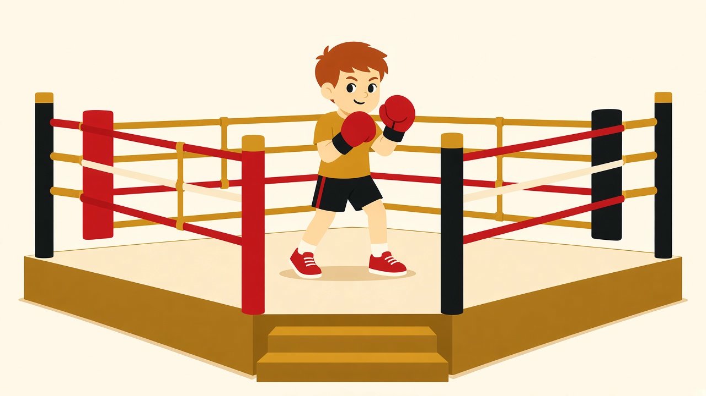

Бокс для детей · 12.11.2026

Родители часто смотрят на бокс через фильмы: ринг, удары в голову, кровь. Отсюда и страхи: не рано ли, не травмируется ли, не станет ли ребёнок агрессивным. На детской тренировке картина другая. Это занятие, где учат двигаться, слушать и держать внимание, а не бить друг друга. Даже у младших детей оно мало похоже на бой.
Первый вопрос, который задают почти все родители: будут ли дети сразу боксировать друг с другом. Нет. Спарринг — отдельный этап. К нему подходят не на первых занятиях. Сначала техника, контроль движения и согласие самого ребёнка. Без готовности партнёрский бой не открывают.
В младшем возрасте никто никого не бьёт. Учат стойке, передвижению, различать левую и правую руку, попадать по лапам или мешку. Нагрузку тренер подстраивает под возраст и самочувствие. Если ребёнку тяжело — темп снижают. Терпеть до плохого самочувствия не нужно, и ребёнка об этом тоже предупреждают.
Детский бокс не про то, чтобы «дать сдачи во дворе». Он про управление телом и вниманием. Умение постоять за себя приходит гораздо позже и совсем не обязательно через спарринг.
Детская тренировка обычно короче и живее взрослой. Много движения, простые правила, элементы игры. Реакция на хлопок, работа ног, удары по лапам на счёт, скакалка. Задача — удержать интерес и при этом повторять одно и то же движение правильно.
Ребёнок учится вещам, которые пригодятся и вне зала: стоять на месте, когда сказали «стой»; ждать своей очереди у лап; слушать команду и не бросать перчатки после первой ошибки. Это и есть дисциплина в боксе — не окрик, а привычка делать движение за движением.
На детском занятии тренер не гонит группу одним темпом: кому-то нужно больше игры и коротких подходов, кому-то уже можно дать чуть более длинный раунд на мешке.
Типичная картина первого месяца: ребёнок путает стойку, забывает выдохнуть на ударе, отвлекается на то, что происходит в другом конце зала. Это не провал. Так осваивают новое движение. Поправки будут снова и снова — не потому что «не получилось», а потому что без подсказки руки сами уходят в широкий замах, а взгляд — на свои перчатки вместо цели.
Координация и равновесие. Стойка, шаг, удар и возврат руки в защиту — это несколько действий сразу. Для младшего возраста это серьёзная работа, даже если со стороны выглядит как игра.
Внимание. Нужно смотреть не на свои перчатки, а на лапы, слышать счёт, не терять вторую руку в защите. Ребёнку, которому дома трудно усидеть на месте, такая нагрузка часто подходит лучше, чем ещё одно занятие «послушать и посидеть».
Уверенность без задиристости. Когда движение получается, ребёнок это чувствует. Обычно это спокойная уверенность, а не желание сразу проверять себя на других. Страх, что бокс сделает ребёнка агрессивным, на практике чаще не подтверждается: энергия уходит в работу, а в зале как раз учат бить по снаряду и останавливаться по команде.
Характер. Проигрывать связку и повторять её снова. Не бросать, когда руки устали. Радоваться чужому удачному удару, а не только своему. Это не появляется за одну неделю, и никто этого не обещает. Но формат занятия к этому ведёт, если ходить регулярно.
Не стоит ждать, что через месяц ребёнок станет чемпионом, исправит все школьные трудности или «перестанет себя вести». Бокс — это тренировка, а не волшебный метод воспитания.
После первого раза синяков, как правило, нет. Обычно ребёнок устаёт, краснеет и по дороге домой обсуждает, когда можно прийти снова. На следующий день могут ныть ноги или плечи — обычная мышечная усталость после новой нагрузки.
Не все дети влюбляются в зал с первой минуты. Кому-то шумно, кто-то стесняется группы, кто-то ждёт сразу «как в мультике». Это нормально. Имеет смысл дать несколько занятий, чтобы понять, его это место или нет. Если после нескольких тренировок ребёнок идёт без охоты и уходит расстроенным — стоит остановиться и не давить.
Родителю полезно не сравнивать своего ребёнка с теми, кто ходит уже полгода, и не требовать «бить сильнее». На детском занятии важнее точность, внимание и желание вернуться.
Первая тренировка не сделает из ребёнка боксёра. Она покажет, как устроено занятие и хочет ли он туда вернуться. Этого достаточно, чтобы принять решение.
Живёшь в Перми — приходи на пробную в «Золотые перчатки»: https://goldengloves59.ru